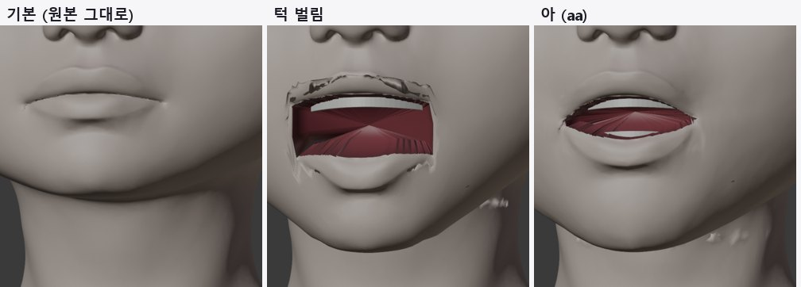
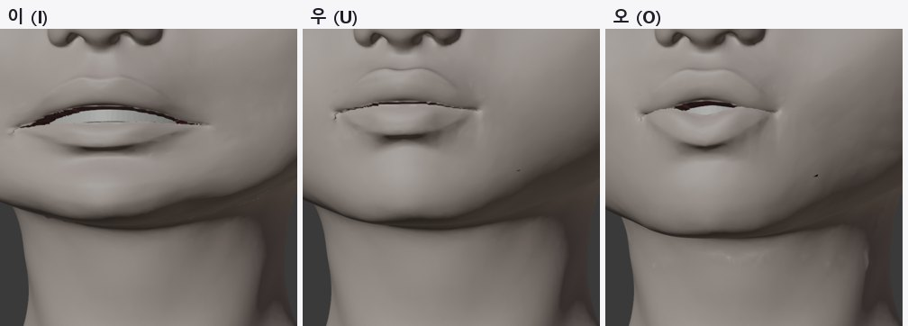
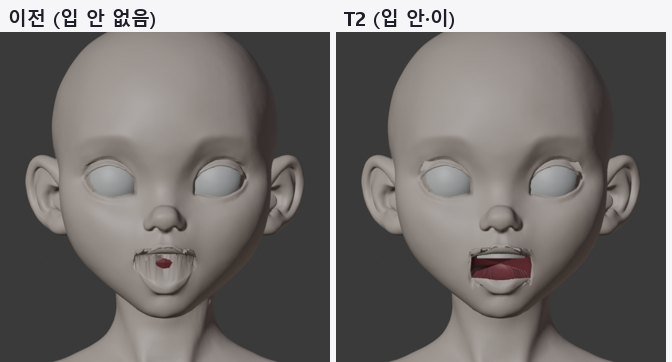
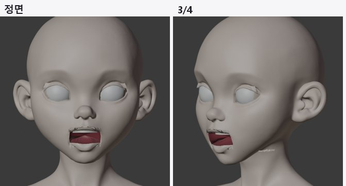
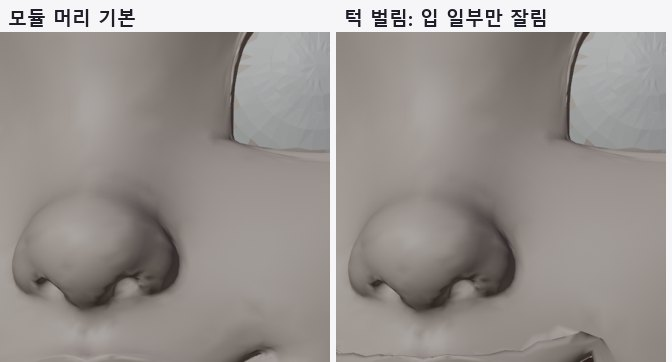

<title>T2 입 안 테스트</title>
<link rel="preconnect" href="https://fonts.googleapis.com">
<link rel="preconnect" href="https://fonts.gstatic.com" crossorigin>
<link rel="stylesheet" href="https://fonts.googleapis.com/css2?family=IBM+Plex+Mono:wght@400;500&family=IBM+Plex+Sans+KR:wght@400;500;600;700&display=swap">
<style>
/* Layout: one reading column; figures full width of the column */
:root{--bg:#F5F6F8;--paper:#fff;--ink:#1B1F27;--muted:#5B6473;--line:#DDE1E8;--soft:#EEF1F6;--accent:#2F5BD3;--good:#1E8A52;--bad:#C83A32;--warn:#B26A00;
--f-body:"IBM Plex Sans KR","Malgun Gothic",system-ui,sans-serif;--f-mono:"IBM Plex Mono",ui-monospace,Consolas,monospace}
@media (prefers-color-scheme: dark){:root:not([data-theme="light"]){--bg:#12151B;--paper:#191D25;--ink:#E5E8EE;--muted:#9BA4B3;--line:#2B313C;--soft:#20252F;--accent:#7FA2FF;--good:#5ACB8C;--bad:#FF6F66;--warn:#F0AE48;color-scheme:dark}}
:root[data-theme="dark"]{--bg:#12151B;--paper:#191D25;--ink:#E5E8EE;--muted:#9BA4B3;--line:#2B313C;--soft:#20252F;--accent:#7FA2FF;--good:#5ACB8C;--bad:#FF6F66;--warn:#F0AE48;color-scheme:dark}
*{box-sizing:border-box}
body{background:var(--bg);color:var(--ink);font-family:var(--f-body);font-size:16px;line-height:1.7}
main{max-width:920px;margin:0 auto;padding-inline:16px;padding-block:26px 60px}
h1{font-size:clamp(25px,4vw,33px);margin:0;line-height:1.25;text-wrap:balance}
.sub{color:var(--muted);margin:6px 0 0}
h2{font-size:21px;margin:38px 0 6px;text-wrap:balance}
h3{font-size:17px;margin:20px 0 4px}
p,ul,ol{max-width:72ch} li{margin:3px 0}
figure{margin:16px 0;background:var(--paper);border:1px solid var(--line);border-radius:12px;padding:12px}
figure img{display:block;width:100%;height:auto;border-radius:6px;background:#2a2a2e}
figure svg{display:block;width:100%;height:auto}
figcaption{font-size:14px;color:var(--muted);margin-top:8px}
figcaption b{color:var(--ink)}
.tbl{overflow-x:auto;margin:12px 0}
table{border-collapse:collapse;font-size:14.5px;min-width:540px;width:100%;background:var(--paper)}
th,td{border:1px solid var(--line);padding:6px 10px;text-align:left;vertical-align:top}
th{background:var(--soft)}
td.num{font-family:var(--f-mono);font-variant-numeric:tabular-nums;white-space:nowrap}
.good{color:var(--good);font-weight:600}.bad{color:var(--bad);font-weight:600}.warn{color:var(--warn);font-weight:600}
.box{background:var(--paper);border:1px solid var(--line);border-left:4px solid var(--accent);border-radius:0 10px 10px 0;padding:12px 16px;margin:14px 0}
code{font-family:var(--f-mono);font-size:13.5px;background:var(--soft);padding:1px 5px;border-radius:4px;overflow-wrap:anywhere}
svg text{font-family:var(--f-body)}
.s-ink{fill:var(--ink)}.s-muted{fill:var(--muted)}.s-paper{fill:var(--paper)}.s-soft{fill:var(--soft)}.s-acc{fill:var(--accent)}.s-good{fill:var(--good)}.s-bad{fill:var(--bad)}
.st-acc{stroke:var(--accent)}.st-good{stroke:var(--good)}.st-ink{stroke:var(--ink)}.st-muted{stroke:var(--muted)}.st-bad{stroke:var(--bad)}
</style>
<main>
<h1>T2 · 입 안 (주머니·이·혀)</h1>
<p class="sub">2026-10-12 · 원본 정점은 그대로, 잘린 입술 가장자리에서 새 부품을 이어 붙임 · v3 + 모듈 머리</p>
<div class="box"><b>결론</b>: v3는 입을 벌리면 입 안 주머니와 윗니가 보이고, '아'·'이' 입모양에서 이가 드러납니다. 원본 정점 변경은 0.0mm입니다. 남은 문제는 네모나게 각진 입꼬리, 윗입술 안쪽 벽의 들쭉날쭉함, 목 옆 작은 혹, 약한 '오'·'우'입니다. 모듈 머리는 입술 경계 검출 실패로 입의 일부만 잘렸습니다.</div>

<h2>1. 작동 원리</h2>
<figure>
<svg viewBox="0 0 860 260" role="img" aria-label="입 안 주머니 구조">
  <g transform="translate(30,20)">
    <text x="0" y="16" class="s-ink" font-size="15" font-weight="700">옆 단면 (입 벌림)</text>
    <path d="M40 60 C80 52 120 56 150 70" fill="none" stroke="#c9a28a" stroke-width="12" stroke-linecap="round"/>
    <path d="M40 150 C80 160 120 156 150 140" fill="none" stroke="#c9a28a" stroke-width="12" stroke-linecap="round"/>
    <text x="0" y="56" class="s-muted" font-size="12">윗입술(원본)</text><text x="0" y="176" class="s-muted" font-size="12">아랫입술(원본, 턱과 회전)</text>
    <path d="M150 70 L172 72 L300 82 L330 105 L300 128 L172 136 L150 140" fill="none" class="st-acc" stroke-width="4"/>
    <text x="175" y="66" class="s-acc" font-size="12">① 입술 안쪽 벽 3mm</text><text x="236" y="148" class="s-acc" font-size="12">② 주머니 벽 22mm</text><text x="336" y="110" class="s-acc" font-size="12">③ 뒤 막음</text>
    <rect x="182" y="78" width="8" height="18" class="s-paper st-muted"/><text x="196" y="94" class="s-muted" font-size="11">윗니</text>
    <rect x="182" y="118" width="8" height="16" class="s-paper st-muted"/><text x="196" y="132" class="s-muted" font-size="11">아랫니·혀(턱 따라)</text>
  </g>
  <g transform="translate(470,20)">
    <text x="0" y="16" class="s-ink" font-size="15" font-weight="700">움직임 규칙</text>
    <text x="0" y="50" class="s-ink" font-size="13">새 정점은 자기가 자라난 입술 가장자리 정점의 움직임을 복사</text>
    <text x="0" y="76" class="s-muted" font-size="13">· 턱 벌림: 그 정점의 회전각(턱 축 기준)을 읽어 같은 각도로 회전</text>
    <text x="0" y="98" class="s-muted" font-size="13">· 입모양: 그 정점의 이동량을 그대로(주머니 벽은 60%)</text>
    <text x="0" y="120" class="s-muted" font-size="13">· 아랫니·혀: 아랫입술 가운데 회전각, 윗니는 고정</text>
    <text x="0" y="156" class="s-ink" font-size="13">윗입술·아랫입술 구분</text>
    <text x="0" y="180" class="s-muted" font-size="13">자른 뒤 두 가장자리가 같은 위치라서, 위치가 아니라</text>
    <text x="0" y="200" class="s-muted" font-size="13">"어느 쪽 입술 면에 붙어 있는지"로 판정 (버그 수정)</text>
  </g>
</svg>
<figcaption><b>그림 1.</b> 입 안 구조. 파란 선이 새로 추가한 부품이고, 살색 입술은 원본입니다.</figcaption>
</figure>

<h2>2. 순서와 설정</h2>
<div class="tbl"><table>
<tr><th>단계</th><th>하는 일</th><th>설정값</th></tr>
<tr><td>① 입 틈 찾기</td><td>입술을 자른 자리의 경계 고리 중 가운데에 있고 반은 턱과 움직이는 것</td><td>v3: 정점 120, 너비 53mm</td></tr>
<tr><td>② 부품 생성</td><td>고리 → 안쪽 벽(3mm 뒤) → 주머니 벽(중심 쪽 85%·90%, 22mm 뒤) → 뒤 막음(26mm). 윗니·아랫니 호, 혀(타원체)</td><td>입 안 재질 진한 빨강</td></tr>
<tr><td>③ 표정 복사</td><td>모든 표정 키에서 새 정점이 가장자리 정점을 따라감</td><td>턱 각도는 회전으로 재적용</td></tr>
<tr><td>④ 검사</td><td>입 영역 정면 광선 221개가 처음 닿는 것: 피부 / 입 안 / 머리 껍질 안쪽(비침)</td><td>qa_mouth.json</td></tr>
</table></div>

<h2>3. 결과</h2>
<figure><figcaption><b>그림 2. v3 기본·턱 벌림·아.</b> 기본은 원본 그대로이고, 벌리면 입 안 주머니와 윗니가 보입니다.</figcaption></figure>
<figure><figcaption><b>그림 3. 이·우·오.</b> '이'는 넓게 벌어지며 이가 보이고, '우'·'오'는 변화가 작습니다(MPFB 입모양 움직임을 그대로 가져온 값).</figcaption></figure>
<figure><figcaption><b>그림 4. 이전과 비교.</b> 이전에는 입술 사이로 머리 껍질 안쪽이 줄무늬로 보였습니다.</figcaption></figure>
<figure><figcaption><b>그림 5. 턱 벌림 전체 모습.</b></figcaption></figure>
<figure><figcaption><b>그림 6. 모듈 머리 (실패).</b> 웃는 모양으로 휜 입선을 경계 검출이 따라가지 못해, 입 너비 5cm 중 1.1cm만 잘렸습니다.</figcaption></figure>
<div class="tbl"><table>
<tr><th>상태</th><th>피부</th><th>입 안</th><th>비침(머리 안쪽)</th></tr>
<tr><td>v3 기본</td><td class="num">221</td><td class="num">0</td><td class="num good">0</td></tr>
<tr><td>v3 턱 벌림</td><td class="num">56</td><td class="num good">149</td><td class="num warn">16</td></tr>
<tr><td>v3 아</td><td class="num">99</td><td class="num good">122</td><td class="num good">0</td></tr>
<tr><td>v3 오</td><td class="num">207</td><td class="num">14</td><td class="num good">0</td></tr>
<tr><td>모듈 머리 턱 벌림</td><td class="num">104</td><td class="num">25</td><td class="num bad">92</td></tr>
</table></div>
<p>원본 정점 변경: v3 0.0mm, 모듈 머리 0.0mm. 턱 벌림 때 아랫입술 가운데 회전 14.5°.</p>

<h2>4. 시행착오</h2>
<ol>
  <li><b>입술 위·아래 판정 오류</b>: 자른 두 가장자리가 같은 위치라 위치로 판정하다 아랫입술 일부가 윗입술로 분류됐습니다. 아랫입술 회전이 2.3°에 그쳤고, 면 소속으로 판정하도록 고쳐 14.5°가 됐습니다.</li>
  <li><b>입모양에서 입이 안 벌어짐</b>: 같은 이유로 두 가장자리가 같은 움직임을 받았습니다. 각자 자기 쪽으로 1.2mm 옮긴 위치에서 MPFB 움직임을 찾도록 고쳤습니다.</li>
  <li><b>목 혹</b>: 턱 가중치가 목까지 퍼졌습니다. 턱 밑·뒤에서 줄였지만 목 옆 일부에 남아 있습니다.</li>
</ol>

<h2>5. 남은 일</h2>
<ul>
  <li>입꼬리: 틈 양 끝에서 안쪽 벽을 둥글게 모아 네모난 모서리를 없앱니다.</li>
  <li>윗입술 안쪽 벽: 경계 고리를 부드럽게 다듬은 뒤 벽을 만듭니다.</li>
  <li>목 옆 혹: 턱 가중치를 턱선 기준 거리로 다시 제한합니다.</li>
  <li>'오'·'우': MPFB 값이 약하면 입술 고리를 오므리는 계산을 더합니다. 표정 스캔(T7)의 '아' 스캔과도 비교합니다.</li>
  <li>모듈 머리: 휜 입선을 따라가도록 입술 경계 탐색을 고칩니다(T4와 함께).</li>
</ul>

<h2>6. 파일</h2>
<ul>
  <li><code>tools/face_auto/mouth_parts.py</code>: 입 안 주머니·이·혀, 표정 복사, 광선 검사</li>
  <li><code>tools/face_auto/rig_original.py</code>: 입술 위·아래 판정, 입모양 측별 조회, 목 가중치 감소</li>
</ul>
</main>
